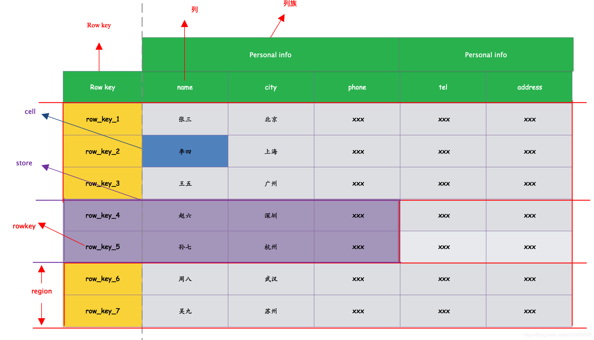
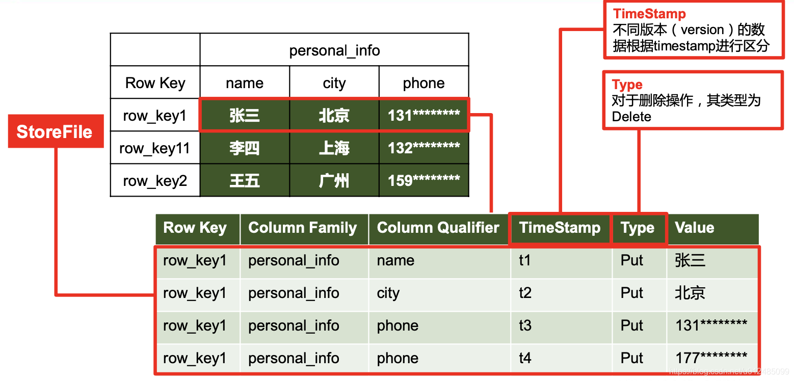

Ch02-HBase 之数据模型
April 15, 2019
逻辑上，HBase 的数据模型同关系型数据库很类似，数据存储在一张表中，有行有列。但从 HBase 的底层物理存储结构 (K-V) 来看，HBase 更像是一个 multi-dimensional map。
1. 基本概念 #
| 术语 | 说明 |
|---|---|
| NameSpace | 类似于关系型数据库的 DatabBase 概念，每个命名空间下有多个表。HBase 有两个自带的命名空间，分别是 hbase 和 default，hbase 中存放的是 HBase 内置的表，default 表是用户默认使用的命名空间。 |
| Table | 类似于关系型数据库的表概念。不同的是，HBase 定义表时只需要声明列族即可，不需要声明具体的列。这意味着，往 HBase 写入数据时，字段可以动态、按需指定。因此，和关系型数据库相比，HBase 能够轻松应对字段变更的场景 |
| Row | 表中的每行数据都由一个 RowKey 和多个 Column(列) 组成，数据是按照 RowKey 的字典顺序存储的，并且查询数据时只能根据 RowKey 进行检索，所以 RowKey 的设计十分重要。 |
| Column | HBase 中的每个列都由 Column Family(列族) 和 Column Qualifier(列限定符) 进行限 定，例如 info:name，info:age。建表时，只需指明列族，而列限定符无需预先定义 |
| TimeStamp | 用于标识数据的不同版本 (version)，每条数据写入时，如果不指定时间戳，系统会 自动为其加上该字段，其值为写入 HBase 的时间。 |
| Cell | 由{rowkey, column_family:column_qualifier, timeStamp}唯一确定的单元。cell 中的数据是没有类型的，全部是字节码形式存储。 |
2. 逻辑结构 #

3. 物理结构 #
